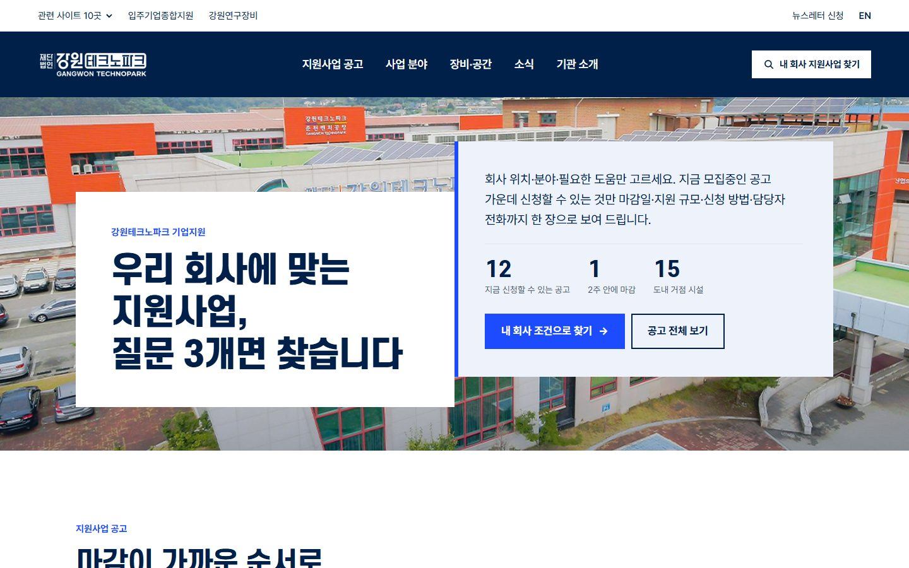
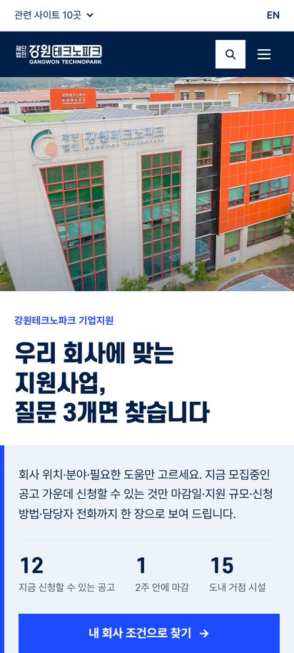
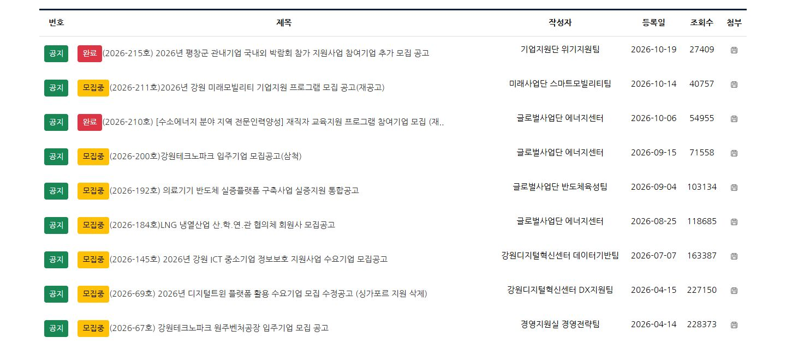
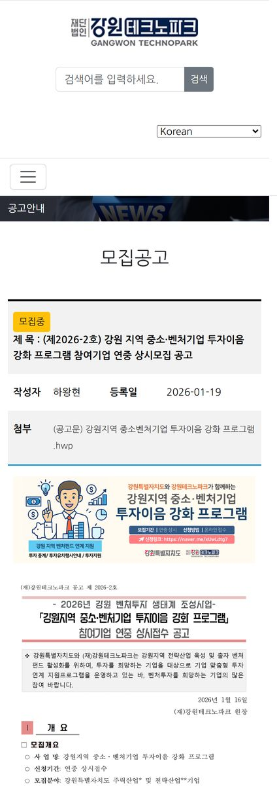
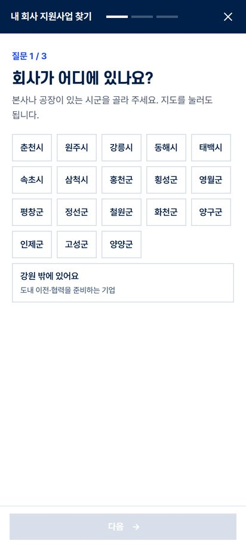
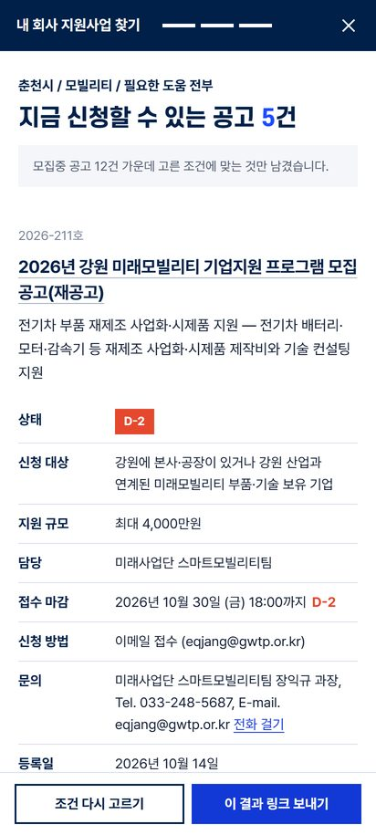
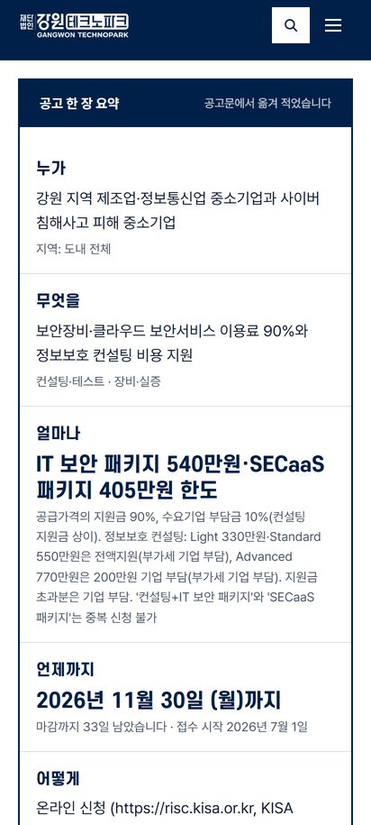
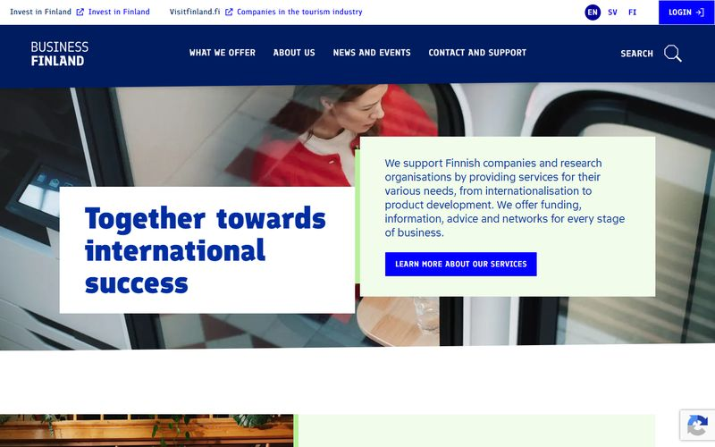
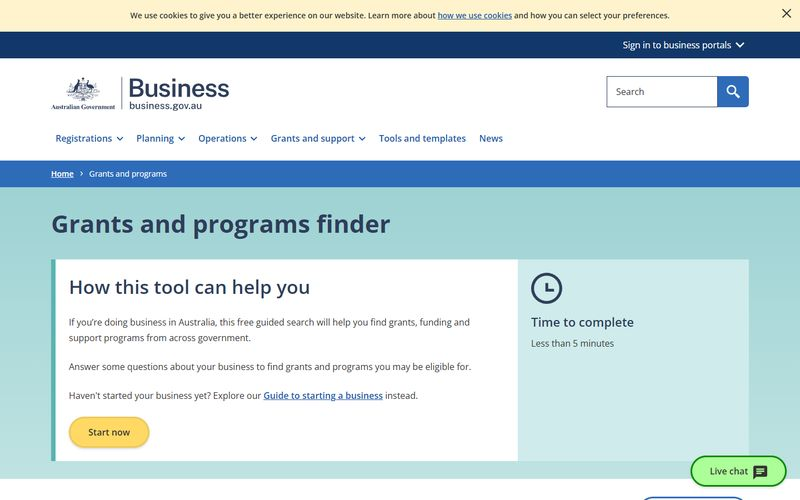
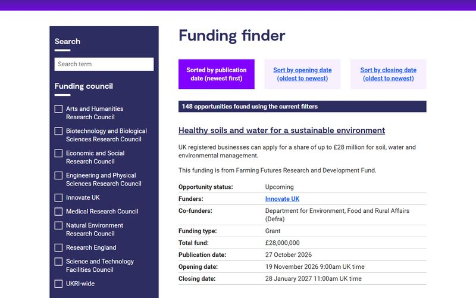

강원테크노파크 홈페이지, 이렇게 바꿔 봤습니다
보기 좋게만 바꾼 것이 아닙니다. 기업이 지원사업을 찾는 방법을 바꿨습니다. 회사 위치·분야·필요한 도움, 질문 3개에 답하면 지금 신청할 수 있는 공고만 마감일·지원 규모·신청 방법·담당 전화와 함께 보여 줍니다.


지금은
2026년 10월 28일 강원테크노파크 홈페이지 모집공고 게시판에서 직접 확인한 내용입니다.
공지로 맨 위에 둔 공고 15건 가운데 11건은 공고 내용이 그림 파일로 올라가 있습니다. 폰에서는 확대해야 읽히고, 글자 검색·복사가 되지 않습니다.
목록에는 번호·제목·작성자·등록일·조회수·첨부가 있고 접수 마감일 칸이 없습니다. 언제까지인지는 공고를 열거나 첨부를 내려받아야 압니다.
‘모집중’으로 표시된 공고 가운데 1건은 공고문에 적힌 마감일(4월 28일)이 이미 지났습니다. 마감일을 칸으로 받으면 표시가 날짜에 맞춰 저절로 바뀝니다.
장비 예약·입주기업 지원·분야별 센터 등 관련 사이트 10곳이 각각 따로 있습니다. 어디로 가야 하는지 먼저 알아야 합니다.


이렇게 바꿨습니다



직원분들 입장에서는
지금처럼 공고문과 첨부를 올리고, 한 줄 글 세 칸과 고르기 세 칸, 마감일·지원 규모·문의처만 더 적으면 찾기·마감 순 목록·한 장 요약·첫 화면 숫자가 저절로 바뀝니다. “우리 회사도 되나요?”, “언제까지예요?”에 화면이 먼저 답하게 만드는 것이 목표입니다.
채워 넣은 값: 2026-145호 ‘강원 ICT 중소기업 정보보호 지원사업’ 공고문 내용
참고한 디자인

Business Finland핀란드 기업 지원 기관남색 바탕·큰 제목·사진 위에 겹친 흰 상자. 강원TP의 남색 로고와 같은 결이라 첫 화면 틀로 썼습니다.

호주 정부 지원사업 찾기business.gov.au회사에 대해 몇 가지 답하면 해당하는 지원사업만 보여 주는 방식. ‘질문 3개로 찾기’의 뼈대입니다.

영국 연구혁신기구 공고 찾기UKRI Funding finder공고마다 상태·지원 규모·마감일을 같은 칸에 적고 마감 순으로 정렬. 공고 목록과 한 장 요약에 옮겼습니다.
국내외 지원기관 첫 화면·공고 찾기·시설 안내 화면을 실제 녹화 영상으로 모았습니다.
만든 방법